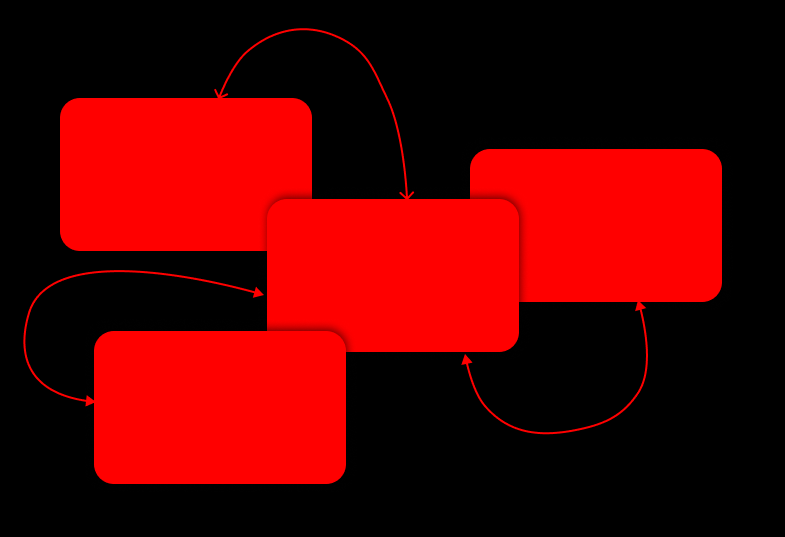
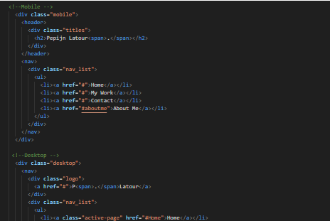

Interactive Media Products
In my evidence for interactive media products, I'll showcase my design journey from wireframes to final products, explaining my choices along the way. I'll share how each decision, from layout to color, was made with the user in mind. Then, I'll proudly present the dynamic websites, mobile apps, or multimedia presentations I've created, demonstrating how users interact with them. This evidence reflects not just technical skill but also my ability to craft engaging digital experiences. Join me as I unveil the culmination of my efforts in interactive media.
Read More

Development and Version Control
Welcome to the Development and Version Control section. Here, I will guide you through the essentials of version control, focusing on Git. Version control is crucial for developers to track and manage changes in their codebases effectively. Whether you are working on a personal project or collaborating with a team, understanding version control is key to maintaining code integrity and facilitating smooth development processes.
Read More

Iterative design
Here you will read about my designs and how i got to the end product of it. i will show my iterations and the explain my design choises click on the button below to read more
Read More

Proffessional standard
Here i will tell you what i did to show how Proffessional i am, how i contact with stakeholders and how i create my reasearch based on the CMD-methods.
i will also show some research i did and how i got to the end product of it. click on the button below to read more.
Read More
Personal Leadership
Here i will tell you about what i did and what i do to learn more about what i can do in the future and what the posibility's are for my future
Read More